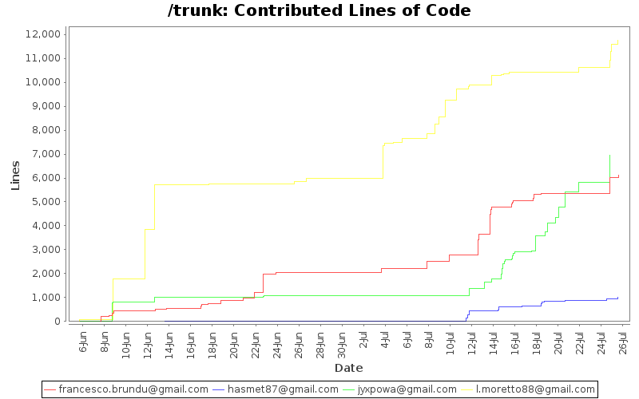
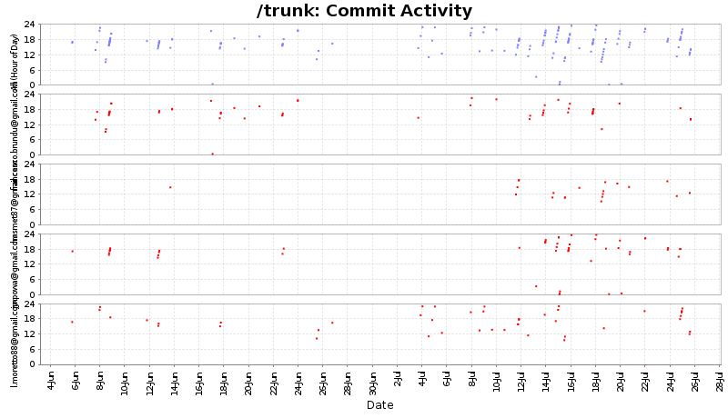
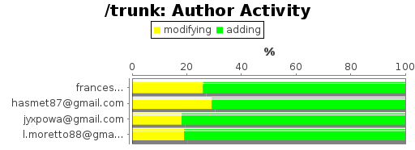
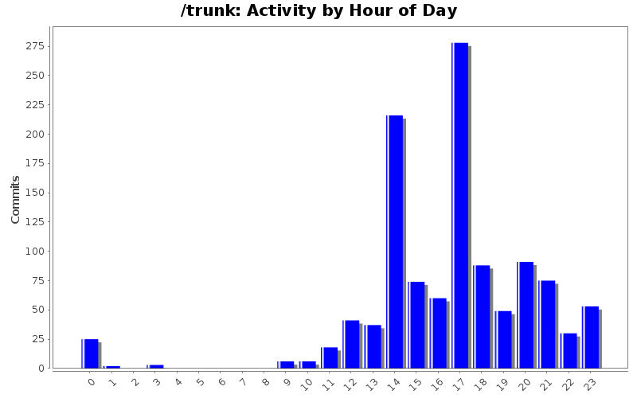
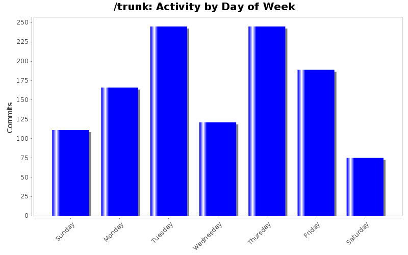

| Author | Author Id | Changes | Lines of Code | Lines per Change |
|---|---|---|---|---|
| Totals | 1152 (100.0%) | 25838 (100.0%) | 22.4 | |
| l.moretto88@gmail.com | l.moretto88@gmail.com | 516 (44.8%) | 11746 (45.5%) | 22.7 |
| jyxpowa@gmail.com | jyxpowa@gmail.com | 165 (14.3%) | 6963 (26.9%) | 42.2 |
| francesco.brundu@gmail.com | francesco.brundu@gmail.com | 410 (35.6%) | 6113 (23.7%) | 14.9 |
| hasmet87@gmail.com | hasmet87@gmail.com | 61 (5.3%) | 1016 (3.9%) | 16.6 |
| Author | Up to 7/2011 | 8/2011 | 9/2011 | 10/2011 | 11/2011 | 12/2011 | 1/2012 | 2/2012 | 3/2012 | 4/2012 | 5/2012 | 6/2012 | 7/2012 |
|---|---|---|---|---|---|---|---|---|---|---|---|---|---|
| Totals | 0 (-) | 0 (-) | 0 (-) | 0 (-) | 0 (-) | 0 (-) | 0 (-) | 0 (-) | 0 (-) | 0 (-) | 0 (-) | 9059 (100.0%) | 16779 (100.0%) |
| l.moretto88@gmail.com | 0 (-) | 0 (-) | 0 (-) | 0 (-) | 0 (-) | 0 (-) | 0 (-) | 0 (-) | 0 (-) | 0 (-) | 0 (-) | 5968 (65.9%) | 5778 (34.4%) |
| jyxpowa@gmail.com | 0 (-) | 0 (-) | 0 (-) | 0 (-) | 0 (-) | 0 (-) | 0 (-) | 0 (-) | 0 (-) | 0 (-) | 0 (-) | 1061 (11.7%) | 5902 (35.2%) |
| francesco.brundu@gmail.com | 0 (-) | 0 (-) | 0 (-) | 0 (-) | 0 (-) | 0 (-) | 0 (-) | 0 (-) | 0 (-) | 0 (-) | 0 (-) | 2028 (22.4%) | 4085 (24.3%) |
| hasmet87@gmail.com | 0 (-) | 0 (-) | 0 (-) | 0 (-) | 0 (-) | 0 (-) | 0 (-) | 0 (-) | 0 (-) | 0 (-) | 0 (-) | 2 (0.0%) | 1014 (6.0%) |

| Month | Author | Lines | Tweet This |
|---|---|---|---|
| July 2012 | jyxpowa@gmail.com | 5902 | |
| June 2012 | l.moretto88@gmail.com | 5968 |



